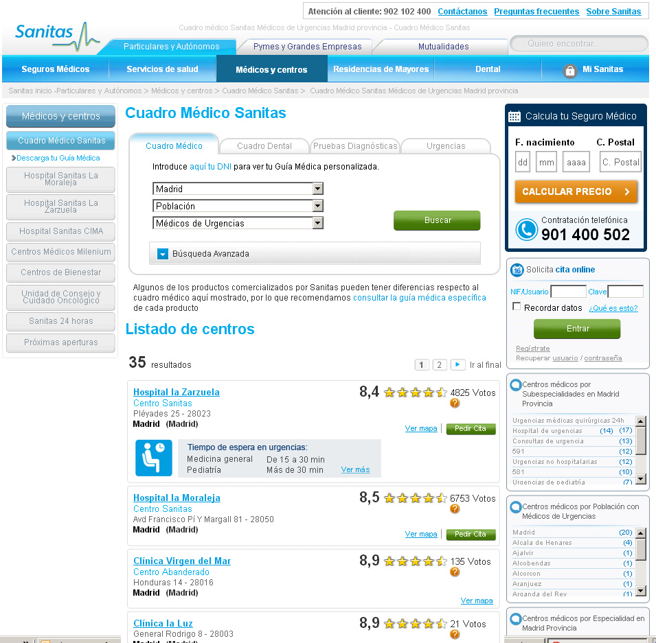
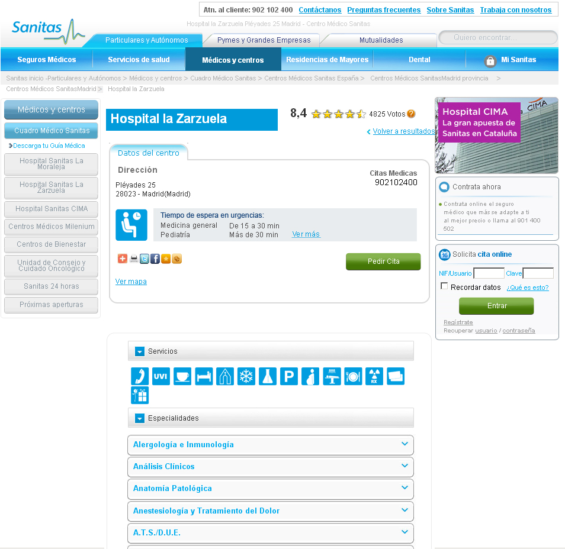

Páginas y bloques entregables de la versión 1.0
Versión inicial
Fecha de entrega: 16/08/2013
HOSPITALES - Centros
- Página de centros de hospitales (hospitales-sanitas.html)
- Fecha de entrega: 16/08/2013

HOSPITALES - Listado Hospitales
- Página Listado Hospitales (listado-hospitales.html)
- Fecha de entrega: 16/08/2013

HOSPITALES - Zarzuela
- Página búsqueda médica (hospital-zarzuela.html)
- Fecha de entrega: 16/08/2013

Especialidades Médicas
- Página de Especialidades Médicas (especialidades-medicas.html)
- Fecha de entrega: 16/08/2013
HOSPITALES - VER MÁS TIEMPO DE ESPERA
- Página detalle ver tiempo de espera (TiemposEspera.html)
- Fecha de entrega: 16/08/2013